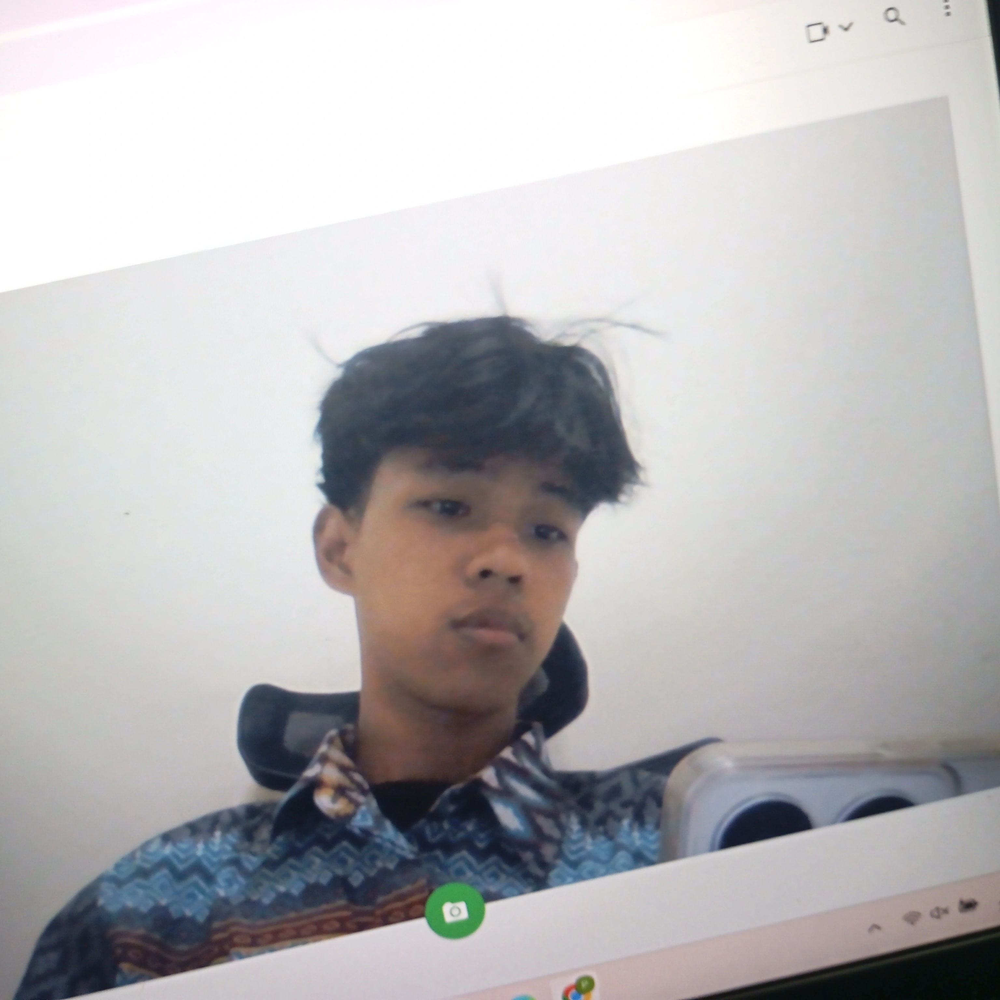

students
Contact Memy name is Muhammad Rizqi Aliansyah. you can call me "ky/iky." i also have many hobbies such as editing, photography, and listening to music.
A bot that automatically sends Grow a Garden stock item notifications to Telegram channels, running serverless in Vercel.
.lua script to automate dirt farming in Growtopia with a line break pattern.
A Minecraft texture pack that changes the entire UI in the lobby and adds several additional in-game features.